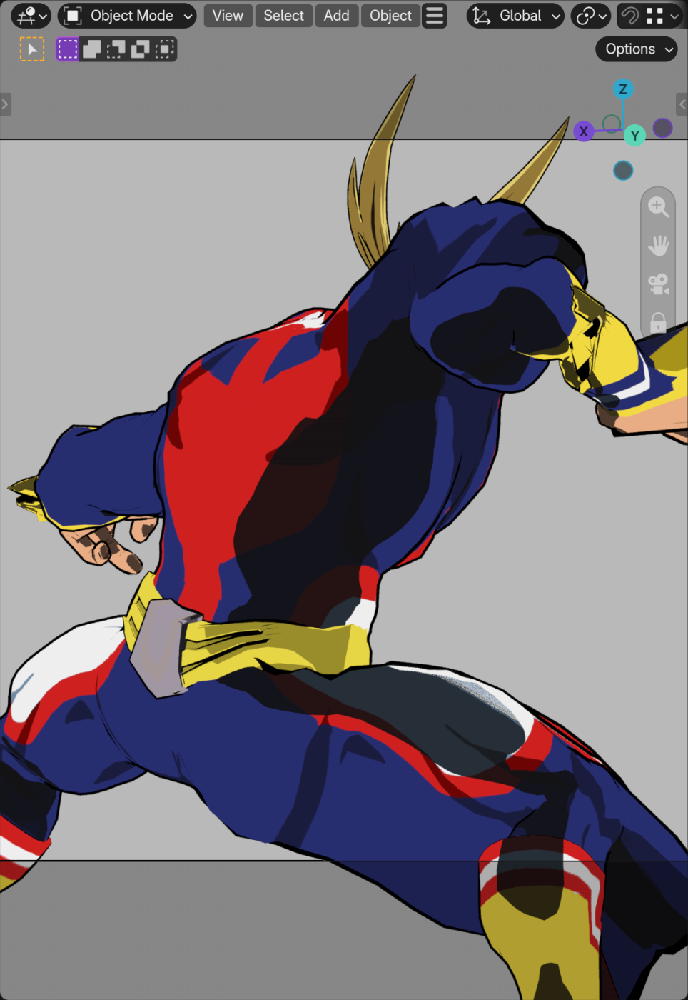
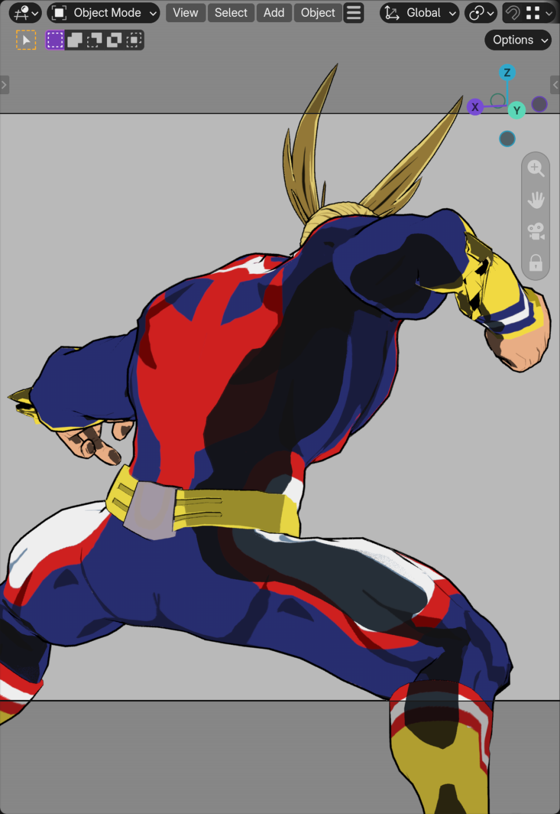

Frame 158, 15 mm camera, Subject Size with whole-character stepping. The near-plane protection kept all 13 meshes visible in depth. A partial blend toward native perspective still enlarged some near edges. Schema 40 blends the projection denominators to keep that contribution bounded through the protected band.


Across 24 orbit poses the longest measured edge of SilverAge_Suit.001 fell from 0.856 to 0.357 in normalized projection coordinates. Zero vertices crossed the near clip in either sweep. Targeted tests passed on Blender 4.2.23, 4.5.15, 5.1.2 and 5.2.2 on macOS. Physical Windows replay remains open.